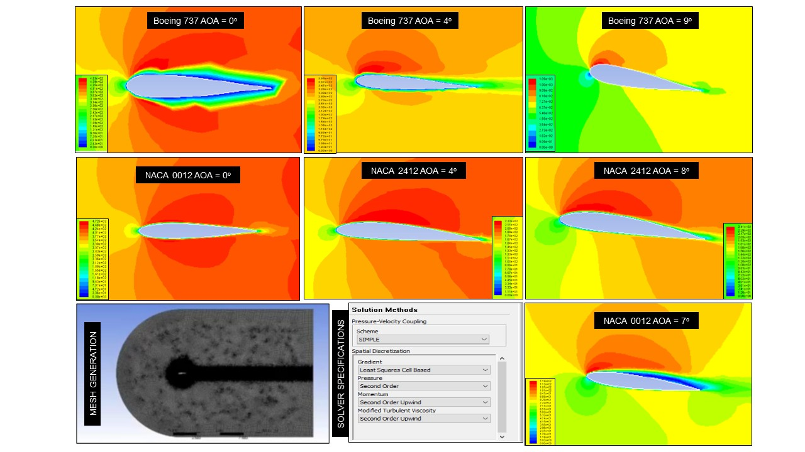

CFD Analysis of airfoils
Year : 2017-18
Course : Bachelor of Technology Thesis
Title : CFD analysis of airfoils using ANSYS FLUENT
A compuataional fluid dynamic based simulations were carried out using ANSYS FLUENT to determine the drag and lift coefficients of NACA airfoils. Parameteric studies were conducted to determine the effect of angle of attack, flow reynolds number and the temperature on the lift and drag performance. The figure below summarizes the velocity counters and the flow separation behavoiur for various airfoils at different angles of attack.

The drag and lift coefficeints obtained from the analyis were further validated with reproted experimental studies. At the considered inlet reynolds number of the flow, the stall angles of attack for NACA 2412 and 0012 airofils, were found to be 8 and 7 degrees respectively.